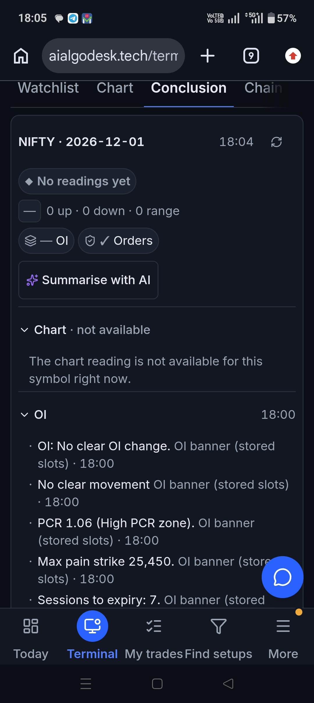
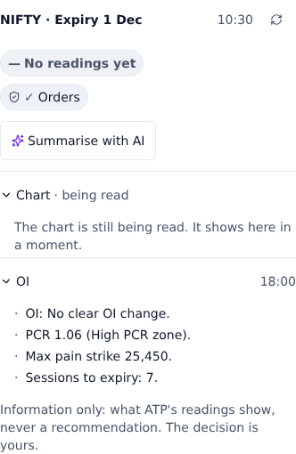
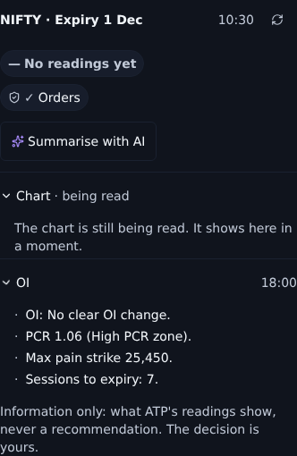
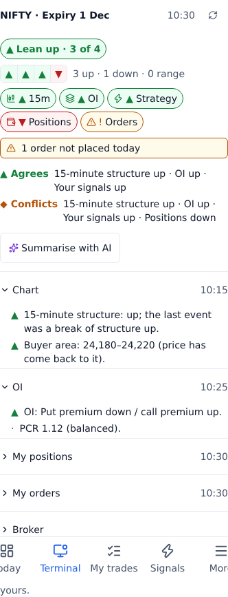
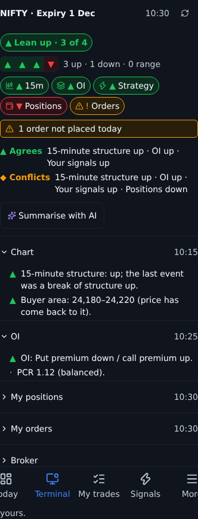
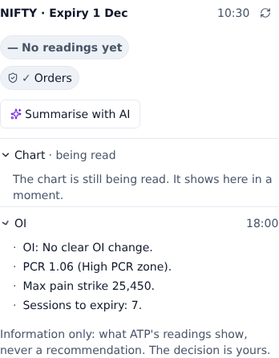
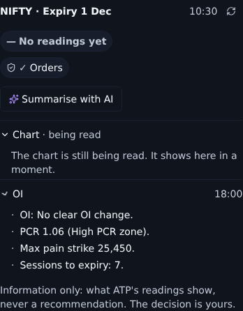
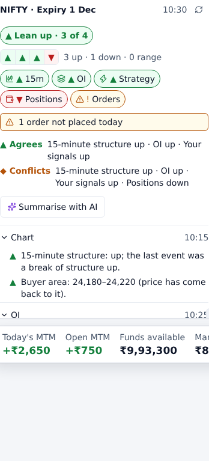
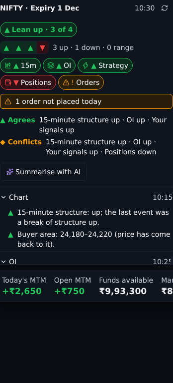

Before: the chart read was busy and was called "not available". Every OI line carried "OI banner (stored slots)". "No clear movement" repeated the OI line. The expiry was a raw date.
After: the chart shows "being read" and the panel reads again by itself. There are no source labels, and a time appears only when it differs from the section's. The repeated line is gone. The expiry reads "Expiry 1 Dec".








